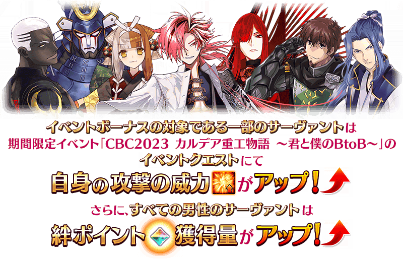
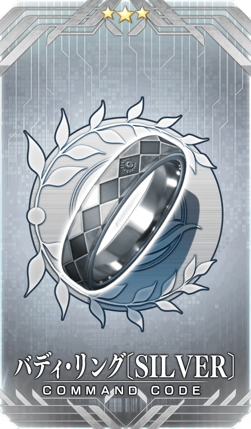
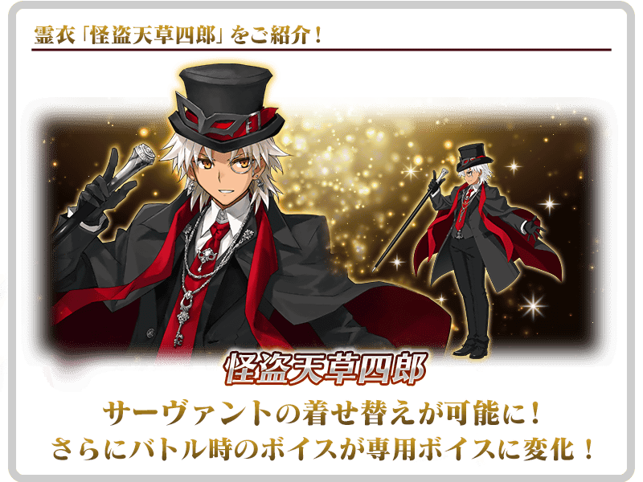
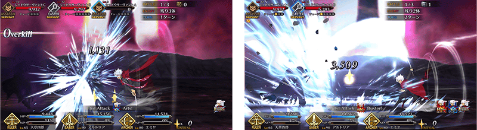
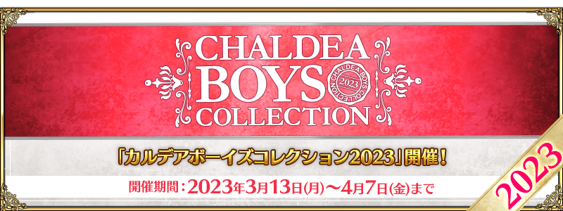

配合預定在2023年3月中旬舉辦的期間限定「迦勒底男性精選2023」，舉辦『「迦勒底男性精選2023」舉辦前夕宣傳活動』！
◆宣傳活動舉辦期間◆
2023年3月8日(三) 17:00～3月16日(四) 2:59
※本頁面皆為開發中圖片。會有與實際圖片相異的情況。
為了記念期間限定「迦勒底男性精選2023」的舉辦，實施特別連續登入獎勵。
在下述的期間中7天內連續登入的話，贈送白銀果實8個、英靈結晶・星之芙芙ALL★3(HP)3張、英靈結晶・太陽之芙芙ALL★3(ATK)3張、聖晶石3個！
◆舉辦期間◆
2023年3月8日(三) 17:00～3月16日(四) 2:59
◆贈送對象◆
所有的御主對象
※新御主玩家必須推進至通過「特異點F 炎上汙染都市 冬木 第3節 進行度1」。
◆連續登入獎勵內容◆
| 登入天數 | 贈送內容 | |
|---|---|---|
| 第1天 |

|
白銀果實 2個 |
| 第2天 |
|
白銀果實 2個 |
| 第3天 |

|
英靈結晶・星之芙芙ALL★3(HP) 3張 |
| 第4天 |
|
白銀果實 2個 |
| 第5天 |

|
英靈結晶・太陽之芙芙ALL★3(ATK) 3張 |
| 第6天 |
|
白銀果實 2個 |
| 第7天 |

|
聖晶石 3個 |
※第1次的登入獎勵會在3月8日(三) 17:00以後配發。 ※之後的登入獎勵會在每天3:00配發。 ※連續登入天數中斷後，無法領取之後的禮物。 ※最多能領取7次，但根據成為贈送對象的時間點，可能無法到此上限。
【3月12日(日) 16:00追記】
期間限定活動「CBC2023 迦勒底重工物語 ～你與我的BtoB～」的期間中，下表的從者在活動關卡中會得到「自身的攻擊威力提升」的加成！
並且，所有的男性從者在活動關卡中會得到「絆點數獲得量提升」的效果！
強化對象從者來挑戰活動吧！
※活動加成的效果量因從者而異。

【活動加成「自身的攻擊威力提升」的對象從者】
| 職階 | 稀有度 | 從者名 |
|---|---|---|
| Archer | ★★★★★ | 高杉晉作 |
| ★★★★ | Emiya〔Alter〕 | |
| Lancer | ★★★ | 赫克特 |
| Caster | ★★★★★ | 出雲阿國 |
| Assassin | ★ | 佐佐木小次郎 |
| Avenger | ★★★★★ | 魔王信長(織田信長) |
【活動加成「自身的絆點數獲得量提升」的對象從者】 ・所有的男性從者
◆有關從者的注意◆
※除了性別「男性」的從者外，下述的從者也包含在活動加成的對象。
・★5(SSR)阿斯托爾福(Saber)
・★5(SSR)沖田總司〔Alter〕(Saber)
・★5(SSR)狄奧斯庫洛伊
・★5(SSR)俄里翁
・★5(SSR)恩奇都
・★5(SSR)羅慕路斯＝奎里努斯
・★5(SSR)迦摩(Assassin)
・★5(SSR)“山之翁”
・★5(SSR)始皇帝
・★5(SSR)迦摩(Avenger)
・★5(SSR)平景清
・★5(SSR)魔王信長(織田信長)
・★5(SSR)蘆屋道滿
・★4(SR)騎士德翁
・★4(SR)凱妮絲(Lancer)
・★4(SR)阿斯托爾福(Rider)
・★4(SR)凱妮絲(Rider)
・★4(SR)鬼一法眼
・★4(SR)謎之蘭丸X
※就算成為對象從者也會有未在本活動的主線劇本登場的情況。 ※自3月12日(日) 16:00，在從者選擇畫面和從者強化畫面等，追加活動加成篩選器。由於是只顯示於活動活躍從者的便利功能，敬請活用。 ※「★5(SSR)魔王信長(織田信長)」是「★5(SSR)織田信長」靈基再臨第3階段後名稱變成「★5(SSR)魔王信長」。
在達文西工房的「稀有稜鏡交換」永久追加『「White Day Spectacles」限定 概念禮裝交換商店』。
交換『「White Day Spectacles」限定 概念禮裝交換商店』的話，會贈予「White Day Spectacles入館證」到禮物箱。
「White Day Spectacles入館證」在管理室(ターミナル)畫面右上的「活動報酬」鍵或達文西工房的「活動道具交換」內的「White Day Spectacles」，可交換1張「White Day Spectacles」限定的概念禮裝1張。
※想用「White Day Spectacles入館證」交換概念禮裝，必須推進至通過「特異點F 炎上汙染都市 冬木」。
◆追加時間◆
2023年3月8日(三) 17:00～
◆追加道具(永久)◆
| 追加道具 | 能交換次數 | 1次交換所需的 稀有稜鏡數 |
|---|---|---|
| 「White Day Spectacles」限定 概念禮裝交換商店 | 1次 | 3個 |
※追加到「稀有稜鏡交換」的『「White Day Spectacles」限定 概念禮裝交換商店』為永久，沒有交換期限。 ※請注意「White Day Spectacles」舉辦時，有使用過「White Day Spectacles入館證」交換禮物的履歷的情況無法於達文西工房的「稀有稜鏡交換」交換。
為了記念期間限定「迦勒底男性精選2023」舉辦，在達文西工房的「魔力稜鏡交換」，永久追加下述的指令紋章。
就算已經持有對象指令紋章的情況，也可於「魔力稜鏡交換」獲得。
◆追加時間◆
2023年3月8日(三) 17:00～
◆在「魔力稜鏡交換」追加的指令紋章◆
|  |
★★★R |
◆追加道具(永久)◆
| 追加道具 | 能交換次數 | 1次交換所需的 魔力稜鏡數 |
|---|---|---|
| ★3(R)バディ・リング〔SILVER〕 | 1次 | 300個 |
※追加到「魔力稜鏡交換」的1種指令紋章為永久，沒有交換期限。
在去年期間限定「White Day Spectacles」登場的靈衣及眼鏡靈衣開放權在達文西工房的「靈衣縫製」追加！
用稀有稜鏡交換後，會開放靈衣開放權。
※想靈衣開放的話，除了靈衣開放權外再加上必須滿足一些開放條件。 ※請注意未持有靈衣開放權的對象從者的情況，可入手靈衣開放權。但無法進行靈衣開放。

【3月11日(六) 17:00追記】
可在達文西工房的「靈衣縫製」交換的「★5(SSR)天草四郎」的靈衣「怪盜天草四郎」開放權，通過「終局特異點」後變得可免費交換！
◆靈衣開放權交換免費化的時間◆
2023年3月11日(六) 17:00～
※靈衣「怪盜天草四郎」開放權的交換免費化沒有期限。
◆靈衣開放權交換免費化的條件◆
滿足以下條件的御主才能免費交換
・通過「終局特異點」
※關於已經取得交換對象靈衣開放權的玩家，無法交換。 ※已經用稀有稜鏡交換過的情況，會在滿足免費開放條件的時間點返還「交換使用的同數量稀有稜鏡」到禮物箱。

【3月11日(六) 17:00追記】
可在達文西工房的「稀有稜鏡交換」開放的「天草四郎體驗關卡」，通過「終局特異點」後變得可免費交換！
請試著體驗對象從者的技能和寶具！
※已經用「稀有稜鏡交換」交換的情況，會在滿足免費開放條件的時間點返還「交換使用的同數量稀有稜鏡」到禮物箱。
◆免費開放時間◆
2023年3月11日(六) 17:00～
※「天草四郎體驗關卡」的交換免費化沒有期限。
◆免費開放條件◆
滿足以下條件的御主才能免費交換
・通過「終局特異點」
◆關卡通過報酬◆
騎階銀像 1個
弓階銀像 1個
呼符 1張

【3月13日(一) 17:00追記】
其他還有，期間限定「白色情人節回憶Pick Up召喚」等的情報公開中！
關於詳情，請自下述橫幅確認。
■「白色情人節回憶Pick Up召喚」詳細情報

■「CBC2023 迦勒底重工物語 ～你與我的BtoB～」詳細情報

■「迦勒底男性精選2023」詳細情報 